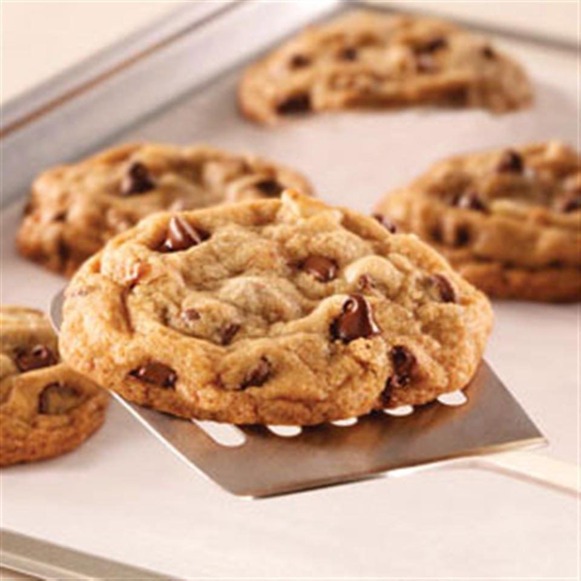

Tiffany's Chocolate Chip Cookies

Description
Classic chocolate chip cookies bake up browned and tender on sheets of parchment paper.
Ingredients
- parchment paper
- 2 and 1/2 cups flour
- 1 teaspoon baking soda
- 1/2 teaspoon ground cinnamon (optional)
- 1 cup butter, softened
- 1 cup packed brown sugar
- 1/2 cup granulated sugar
- 2 eggs
- 2 teaspoons vanilla extract
- 1 bag semi-sweet chocolate chips
- 1 cup coarsely chopped nuts
Steps
- Preheat oven to 350 degrees F. Line cookie sheets with parchment paper; set aside. On another sheet of parchment paper, combine flour, baking soda, salt and cinnamon; set aside.
- Beat together butter, brown sugar and granulated sugar in a large mixing bowl, with an electric mixer, until light and fluffy. Beat in eggs and vanilla.
- Add flour mixture gradually to butter mixture; beat until well blended. Stir in chocolate chips and nuts. Drop by rounded tablespoons onto parchment-lined cookie sheets.
- Bake 10 to 12 minutes or until lightly browned. Cool.